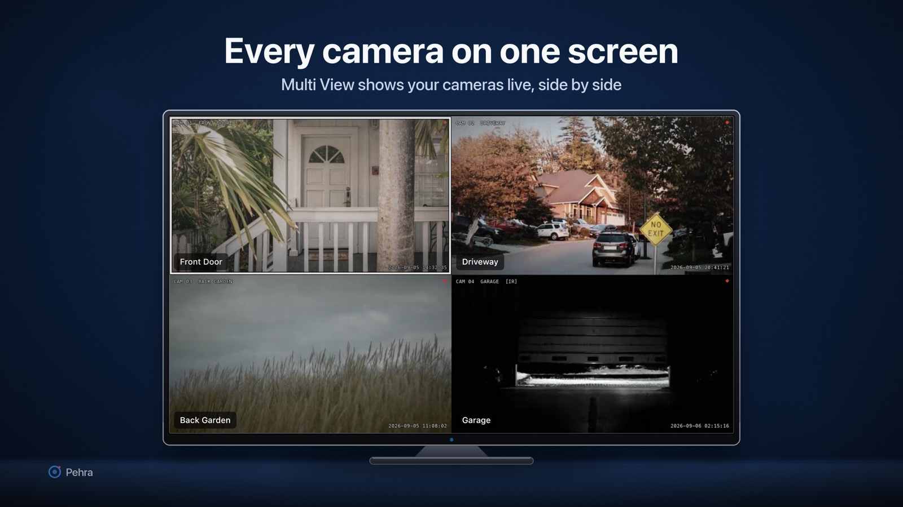

Pehra turns your Apple TV into a monitor for the IP cameras you already own. Video goes straight from your cameras to the TV over your own network, so nothing is uploaded and no account is needed. Watch several cameras at once in a full-screen grid, then open any one of them full screen with a single press. It works with RTSP and ONVIF cameras and recorders, with presets for Hikvision, Dahua and Reolink, and with any generic RTSP address you paste in.

Email sajidhanif865@gmail.com with bug reports, camera compatibility questions, or anything that is not working the way you expect. If a camera will not play, it helps to include its make and model and the stream address you used.
Pehra is made by one developer, so replies usually come within a few days.
Pehra shows live video from IP cameras and recorders on your own local network. Your video and your camera details never leave the devices you own.
What the app stores, only on this Apple TV: the camera details you enter or discover, including names, RTSP and HTTP addresses, ONVIF endpoints and stream profiles; the usernames and passwords for those cameras, held in the system Keychain and sent only to the camera they belong to; your app settings, such as auto-cycle timing and the grid layout; and any snapshots or recordings you choose to save.
What the app does not do: it does not create accounts or ask you to sign in; it does not send video, snapshots, camera addresses or passwords to the developer or to anyone else; it does not collect analytics, advertising identifiers or usage statistics, and contains no advertising or tracking code; and it does not use your location. If the app crashes or hangs, it sends an anonymous crash report to Sentry, a third-party crash-reporting service, containing the crash's stack trace, the app's version and build, your device model and OS version, free/used memory, a random per-installation identifier (not tied to any account or personal information), and the app's own log breadcrumbs. Sentry may derive a coarse location from the report's IP address on ingestion; Pehra does not use it. Crash reports are used only to diagnose and fix crashes, never for advertising or tracking, and never include camera addresses, credentials or video.
Local network: the app connects only to addresses you enter, usually local, but reaches the internet for a public address or VPN; ONVIF discovery stays local. The phone-assisted setup feature serves a small page from the Apple TV that a phone on the same network can open; that page is reachable only inside your network and stops when you leave the setup screen. Demo mode plays sample clips that are bundled inside the app and uses no network at all.
Third-party code: the app includes open-source components such as VLCKit. They run on the device and send nothing on their own. The full list is in Settings, under About and licences.
Retention: nothing is stored outside your device. Removing a camera deletes its details and its saved password. Deleting the app removes its snapshots, recordings and settings; passwords survive in the Keychain, so remove cameras first.
Pehra is not directed at children and does not knowingly collect personal information from anyone.
Contact: sajidhanif865@gmail.com